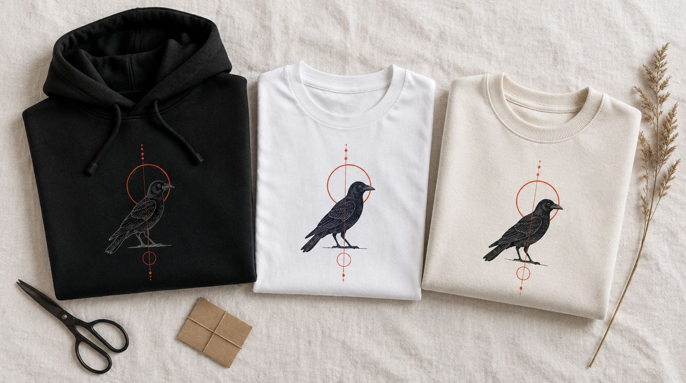

Göğüste küçük logo, sırtta büyük tasarım, kolda isim: kalın kumaşta DTF baskı. Firmaya kış dönemi ekip seti, kişiye çift ve grup hoodie'si.

Sweatshirt ve hoodie, tişörtün kışlık karşılığı ama baskı açısından farklı bir ürün: kumaş kalın, yüzey daha dokulu, baskı alanı daha geniş. Küçük bir göğüs logosu bu kumaşta kaybolabiliyor; buna karşılık sırt tam en baskısı ve kol boyunca yazı çok iyi duruyor. Tasarımı ürünün ölçeğine göre yeniden kuruyoruz, tişörtteki dosyayı olduğu gibi büyütmüyoruz.
Baskı yöntemi DTF; kapüşon, cep ve fermuar gibi dikiş geçen yerlere değil, düz kumaşa basılıyor.
Hazır tasarımlar. Birine dokunun — aşağıdaki stüdyoda açılır, üstünde istediğiniz gibi oynarsınız.
Rengi seçin, tasarımı sürükleyip büyütün, yazıyı kendiniz yazın — ya da kendi dosyanızı açın. Beğendiğinizde tek tuşla sipariş.
Stüdyo yükleniyor… Açılmazsa WhatsApp'tan yazın, tasarımı birlikte kuralım.
Önizleme baskının yerini, ölçüsünü ve rengini gösterir; kumaş dokusu ve ekran ayarları yüzünden gerçek ürün birebir aynı görünmeyebilir. Baskıdan önce size son bir görsel onayı gönderiyoruz. Dosyanız yüklenmiyor — tarayıcınızda kalıyor, sipariş mesajına indirdiğiniz önizlemeyi ekliyorsunuz.
Kış aylarında saha ekibi, kurye, teknik servis ve şantiye personeli tişört yerine hoodie ve sweatshirt giyiyor; logo görünür kalsın diye göğüs küçük logoyu sırt büyük yazıyla birlikte öneriyoruz. Ofis ekibi için düz sweatshirt üstüne tek renk logo, etkinlik ve kamp organizasyonları için kapüşonlu hoodie üstüne büyük tasarım daha uygun.
Beden listesi alınıyor, ürün tedarik ediliyor, basılıp bedenine göre etiketli teslim ediliyor. Sezon başında toplu, sezon içinde yeni katılan personel için tek adet ek sipariş aynı film ve aynı üründen çıkıyor.
Kişiye özel hoodie en çok çiftler ve arkadaş grupları için geliyor: aynı tasarımın eşli sürümü, bir yarısı sende bir yarısı bende çizimler, ortak bir tarih ya da şaka. Doğum günü için sırtta fotoğraf, kolda isim; sınıf ve mezuniyet için aynı tasarımın yirmi isimli sürümü.
Tasarımı biz çiziyoruz, fotoğrafı baskıya hazırlıyoruz; koyu kumaşta rengin nasıl duracağını basmadan ekranda gösteriyoruz. Tek parça sipariş alıyoruz.
Kesim: oversize (düşük omuz, geniş gövde) ve normal kesim. Oversize hoodie'da kapüşon daha dolgun, kol daha uzun duruyor; sırt baskısı için en geniş alan bu kesimde çıkıyor.
Ürün: iki ve üç iplik sweatshirt, şardonlu (içi yumuşak) ve şardonsuz seçenek, kapüşonlu ve bisiklet yaka, fermuarlı ve fermuarsız; çocuk ve yetişkin bedenleri; siyah, lacivert, gri, krem ve sezon renkleri.
Baskı yeri: göğüs sol küçük, göğüs orta, sırt tam en, kol boyu, kapüşon ucu; cep ve dikiş üstüne basılmıyor.
Bakım: tersten, düşük sıcaklıkta yıkama; baskı üstüne ütü yok; kurutma makinesi baskının ve kumaşın ömrünü kısaltıyor.
Kapüşonlu mu bisiklet yaka mı, şardonlu mu, hangi renk, hangi bedenler.
Tasarım hoodie ölçeğine göre yeniden kuruluyor; ürün üstünde ekranda gösteriliyor.
DTF ile basılıyor; kalın kumaşta ilk parça ayrıca kontrol ediliyor.
Katlanıp bedenine göre etiketleniyor; hediye siparişinde kutu.
Baskılı Tişört · Baskılı Yelek · DTF Baskı (Tekstil Transfer) · Tüm baskı ve hediye ürünleri
Şardonlu kumaşın içi tüylendirilmiş, daha sıcak ve yumuşak; kış ve hediye için uygun. Şardonsuz daha ince ve serin, sonbahar-ilkbahar ekip kıyafetinde tercih ediliyor. Baskı ikisinde de aynı.
Kapüşonun düz kısmına küçük bir yazı basılabiliyor; cep ve fermuar gibi dikişli, katmanlı yerlere basmıyoruz çünkü pres düzgün oturmuyor. Alternatif yerleşimi provada gösteriyoruz.
Basarız ama ölçeğini yeniden kuruyoruz: tişörtte iyi duran küçük logo hoodie'de kayboluyor, sırt tasarımı ise büyütülünce çözünürlük ister. Dosyanız vektörse sorun yok, değilse söylüyoruz.
Evet. Aynı ürün ve aynı film dosyası kullanıldığı için sonradan gelen personel için tek parça basıyoruz; ton farkı olmuyor.
Olur. Aynı tasarımın iki yarısı ya da iki sürümü, farklı beden ve renkte, tek siparişte basılıyor.
İletişim
Kaç kişi, hangi renk, kapüşonlu mu — yazın; tasarımı ürün üstünde gösterelim.